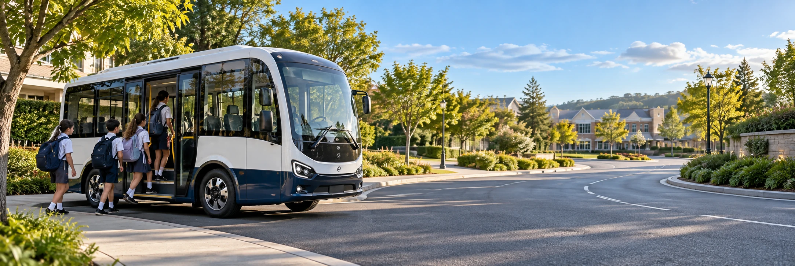
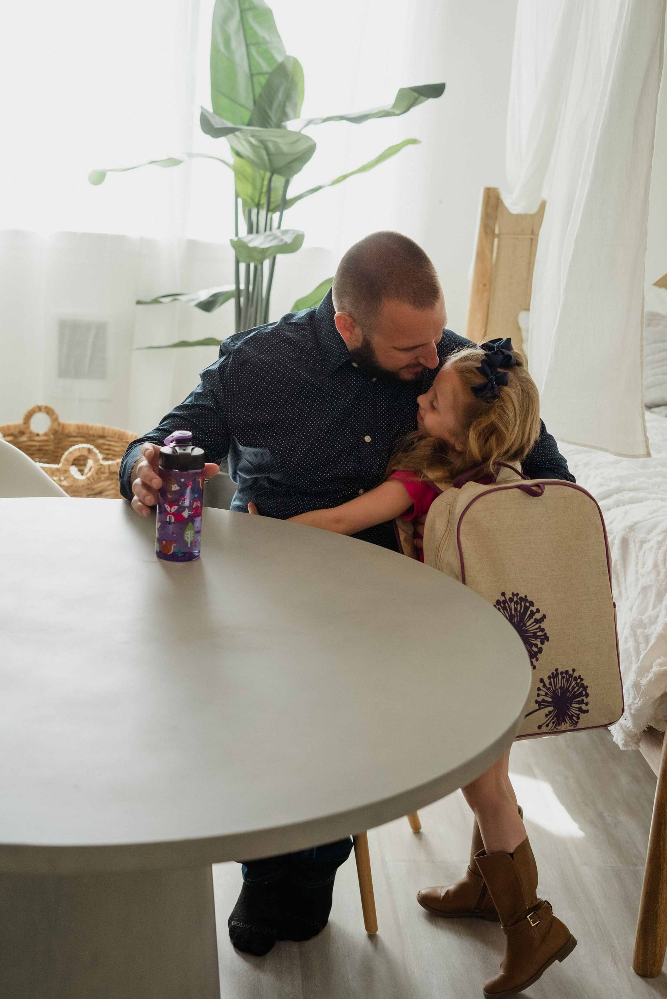
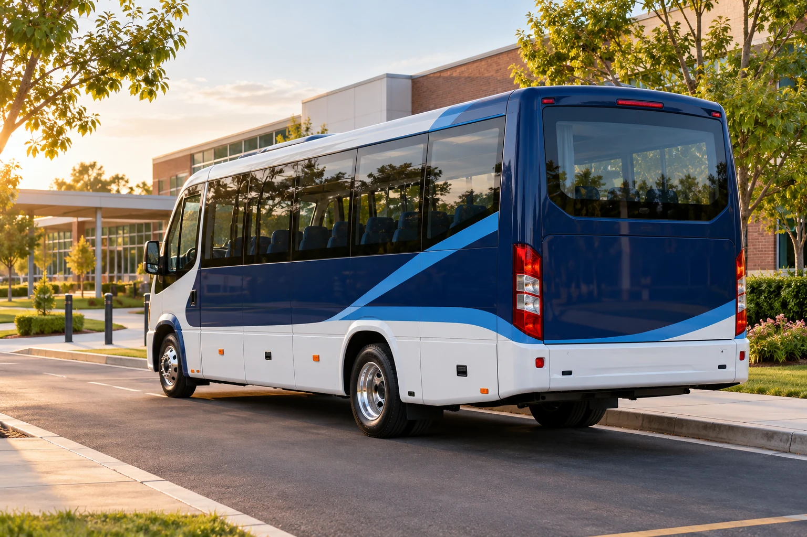
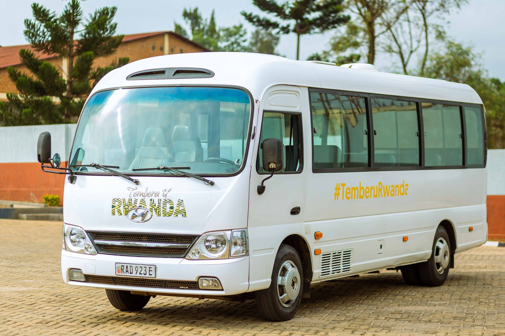
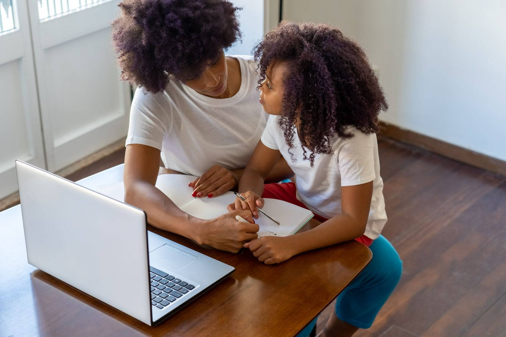

A stop that makes sense
Know where to meet the bus and how the route fits your neighbourhood.

SCHOOL DAYS ARE BIG. LITTLE JOURNEYS MATTER.
A familiar hello. A thoughtful route. An update that makes you smile. A school run designed around your family.
See the parent dashboardA FAMILIAR RHYTHM FOR EVERY FAMILY
Thoughtful transport goes beyond a seat on a bus. It’s the small, dependable details that make a school day feel easier.
Know where to meet the bus and how the route fits your neighbourhood.
Keep morning pickup and afternoon school departure timings close at hand.
Boarding and arrival moments, brought together in one parent space.

THIS IS YOUR SCHOOL-DAY RHYTHM
A considered pickup, a familiar handover, and a clear way to stay connected. Explore a sample school morning.
Explore stops & timingsThe bus starts its planned neighbourhood route.
Pickup at Greenwood Apartments, main gate.
Planned arrival at Westbridge Public School.
Illustrative route and timings. The live service would confirm the final schedule.
ROOM FOR YOUR KIND OF SCHOOL RUN
Explore the service approach, from daily return journeys to one-way travel and a connected parent experience.

A planned morning pickup and afternoon journey home, with a familiar stop and a clear timetable.
Explore daily school runs
When you cover one part of the school run, explore a transport plan for the other. Review the route, timing and fee estimate.
Explore one-way travelFind route timings, attendance updates and sample fee records together. Keep the everyday details easy to see.
Explore the parent spaceCONNECTED IN THE MOMENTS THAT MATTER
Wondering where to find the timetable? Or when the next fee is due? Put the everyday transport details in one place.
A GOOD PLACE TO START
Choosing a school run should feel clearer, one question at a time.
Get to know LittleRouteSearch your school or neighbourhood on Routes & Coverage. Each sample route shows planned stops, pickup times and school arrival.
The dashboard brings together sample route details, a bus journey simulation, attendance, alerts and fee records so you can explore the whole experience.
Yes. Open Dashboard directly, or use the prefilled demo login. No real child record is needed for this front-end preview.
A LITTLE CHANGE TO YOUR EVERYDAY
Start with your neighbourhood. Discover a route and a routine that make sense for your family.
Find your starting point